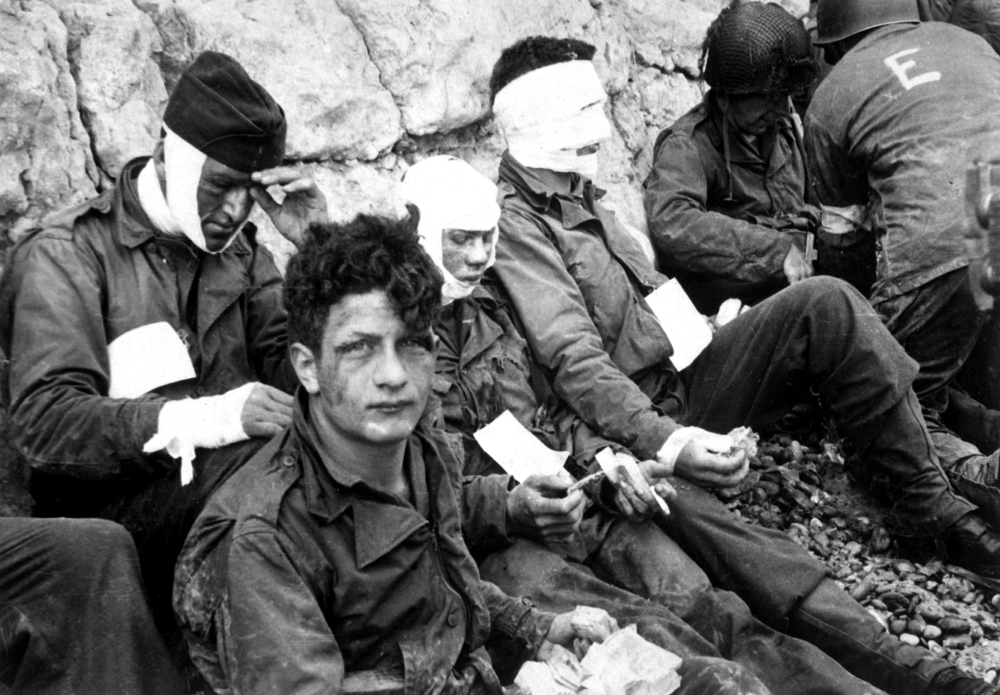

D-Day and the Normandy Landings: Opening the Western Front
Launched on June 6, 1944, Operation Overlord brought Allied land, air, and naval forces ashore in Normandy, France, opening a decisive Western Front in Europe.
Planning, Deception, and Weather Decisions

For over a year before June 1944, Allied planners assembled troops, vehicles, landing craft, and supplies in Britain while coordinating operations across American, British, Canadian, and other Allied forces.
Choosing Normandy meant solving major logistical challenges, including building prefabricated Mulberry harbors and undersea fuel pipelines to supply armies across open beaches until major ports could be captured and cleared.
Deception plans such as Operation Fortitude aimed to mislead German intelligence about the timing and primary target of the invasion, encouraging German commanders to disperse defenses along wider stretches of coast.
Weather forecasting proved decisive in early June 1944. Rough seas and low clouds led General Dwight D. Eisenhower to delay the assault by a day before a short break in bad weather created a narrow window for June 6.
Airborne Drops, Naval Bombardment, and Beach Assaults

Before dawn on June 6, airborne troops dropped or landed by glider behind German coastal positions to secure key bridges, roads, and flanks while naval forces swept mines and provided gunfire support.
Along five beach sectors—Utah, Omaha, Gold, Juno, and Sword—infantry, armored units, and engineers came ashore under heavy conditions against mines, obstacles, artillery, and defensive fire.
Progress varied across the five beaches. Several sectors secured firm footholds on the first day, while Omaha Beach saw intense resistance and heavy casualties before Allied units pushed inland and linked up.
Securing the Beachhead and Strategic Impact

Once initial beachheads were linked, steady reinforcement and supply allowed Allied forces to expand inland despite tough fighting through Normandy's hedgerows and counterattacks.
German forces struggled to shift reserves quickly and replace losses under Allied air superiority, fuel shortages, and heavy pressure on the Eastern and Italian fronts.
Establishing a sustained foothold in Western Europe accelerated the liberation of France and set the stage for the Allied advance toward Germany in 1944 and 1945.
Preparations across southern England transformed ports, airfields, and coastal towns into staging areas for more than two million Allied service members from the United States, the United Kingdom, Canada, France, Poland, and other nations. Months of amphibious exercises—including rehearsals along beaches resembling Normandy—tested coordination between naval landing craft crews, infantry units, engineers, and air controllers.
Along the French coastline, German Field Marshal Erwin Rommel had spent early 1944 strengthening the Atlantic Wall with millions of mines, concrete bunkers, flooded lowlands, anti-tank ditches, and angled steel and wooden beach obstacles designed to tear open landing craft at high tide. However, German commanders disagreed over how to deploy armored reserves, leaving panzer divisions divided between coastal sectors and inland positions.
Allied intelligence and French Resistance networks played an essential supporting role before and during the landings. Reconnaissance flights mapped defensive batteries and beach gradients, while Resistance saboteurs cut telephone lines, disrupted rail junctions, and delayed German reinforcements moving toward Normandy after coded radio broadcasts alerted underground cells on the night of June 5.
At sea, nearly seven thousand naval vessels—from battleships and cruisers to destroyers, minesweepers, and specialized landing craft—crossed the English Channel along swept lanes in rough water. Many troops arrived on the beaches exhausted and seasick before stepping off ramps into chest-deep surf under artillery and small-arms fire.
Specialized armored vehicles known as 'Hobart's Funnies,' developed largely by British engineers, helped overcome coastal defenses on several beaches. Flail tanks cleared paths through minefields, flame-throwing tanks suppressed fortified bunkers, and bridge-laying tanks spanned anti-tank ditches so infantry and armor could advance inland.
On Omaha Beach, strong currents pushed landing craft off their planned sectors, rough seas swamped amphibious tanks, and rugged bluffs gave German defenders commanding fields of fire. Small groups of infantry and combat engineers gradually breached wire and mine barriers under intense fire, climbing the heights and opening exits off the beach by afternoon.
By the end of June 6, roughly 156,000 Allied troops had landed in Normandy—fewer than optimistic pre-invasion planners had hoped, yet enough to hold a continuous coastal foothold. Over the weeks that followed, fierce fighting through Normandy's dense earthen hedgerows tested Allied tactics until the July breakout at Operation Cobra opened the road across northern France.
Air power shaped the Normandy campaign well before the first landing craft touched shore. Allied bomber and fighter commands targeted railways, bridges, fuel depots, and coastal radar sites across northern France and Belgium, complicating German movement and restricting daylight resupply while contesting control of the skies above the invasion beaches.
Medical evacuation and logistics operated on a massive scale from the opening hours of June 6. Hospital ships, transport aircraft, and beach clearing stations moved wounded soldiers back across the Channel while engineers worked to widen narrow coastal tracks, clear mines, and establish supply dumps that could sustain fast-growing armies.
Command coordination across multinational forces was another defining feature of Operation Overlord. British, Canadian, American, and other Allied units operated within shared operational plans under Supreme Allied Commander Dwight D. Eisenhower, balancing national priorities with unified strategic objectives.
During the weeks following D-Day, fierce battles around Caen, Carentan, and Saint-Lô pinned down major German formations and wore away mobile reserves. Once Allied forces broke out of the hedgerow country in late July, mobile armored columns moved rapidly across northern France toward Paris and the German frontier.
Taken together, the Normandy landings demonstrated the complexity of large-scale amphibious warfare and shifted the strategic balance in Western Europe. By opening a sustained Western Front alongside Allied advances in Italy and Soviet offensives in the East, D-Day placed mounting pressure on Germany across multiple theaters.
Engineer battalions and naval salvage teams worked around the clock to clear beach obstacles, repair port facilities, and keep supplies flowing ashore even when severe June storms battered the artificial harbors.
For everyday soldiers, sailors, and airmen across the invasion force, June 6 marked the start of an arduous campaign across France, Belgium, and Germany that demanded endurance, adaptability, and close teamwork under fire.
Communications and intelligence links tied frontline beachhead units to headquarters in England and to neighboring sectors as armies expanded inland. Reliable radio discipline, reconnaissance reports, and timely fuel and ammunition deliveries kept momentum moving forward.
Preserving the memory of June 6 involves honoring the service members who crossed the Channel and understanding how large-scale coalition planning helped turn the tide of the war in Western Europe.
Supply lines across the English Channel faced constant strain during the opening weeks of the campaign, requiring careful coordination between port authorities, naval convoys, truck drivers, and rail crews to move fuel, ammunition, and replacements forward without stalling Allied advances.
Local French civilians also experienced dramatic upheaval as Allied bombers struck transport targets and ground fighting moved across towns and villages. Once liberation progressed, communities began rebuilding homes, schools, and local administration amid wartime shortages.
Behind the front lines, signal corps units, logistics planners, and naval patrols kept communications open and supplies moving despite bad weather and shifting tactical demands across the Normandy beachhead.
Air-ground coordination, engineering repairs, and steady reinforcement across the Channel helped turn fragile initial beachheads into a durable operational base capable of supporting sustained advances across Western Europe.